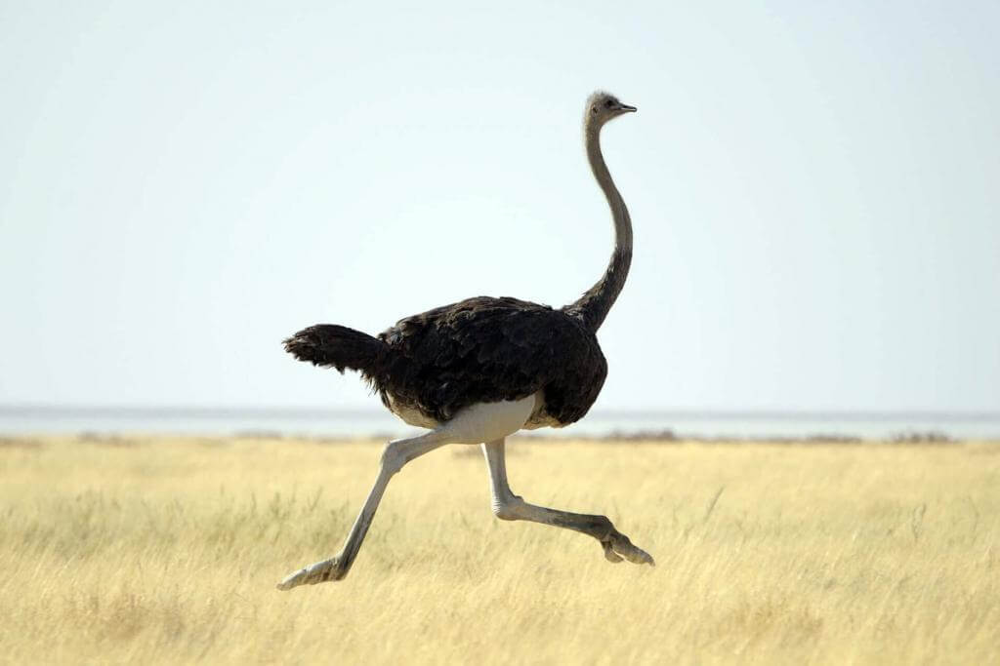
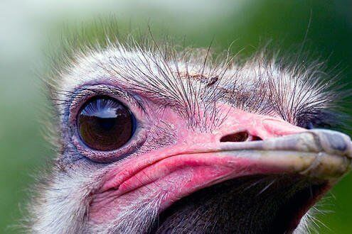
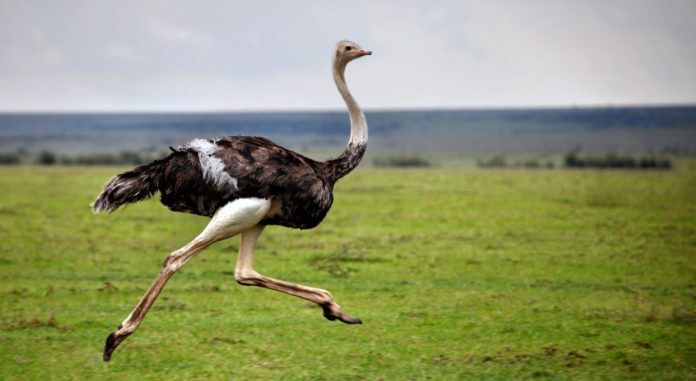
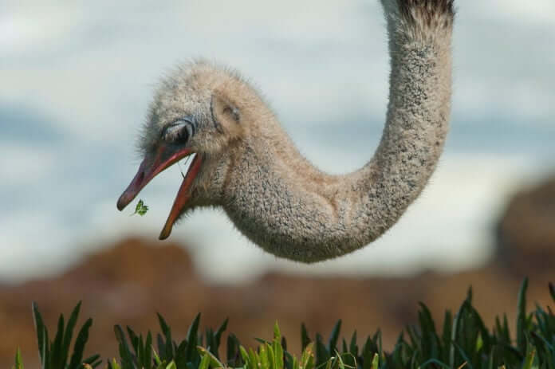
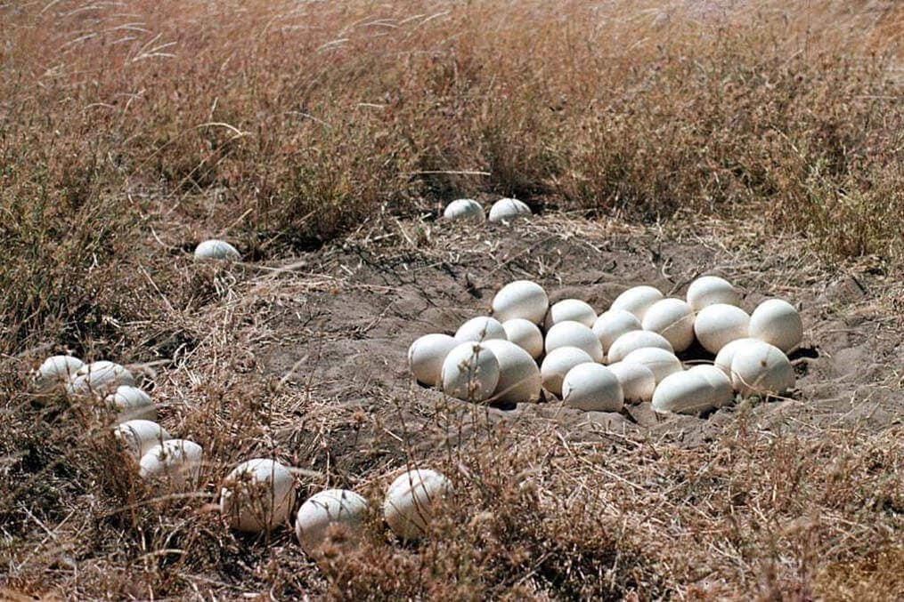
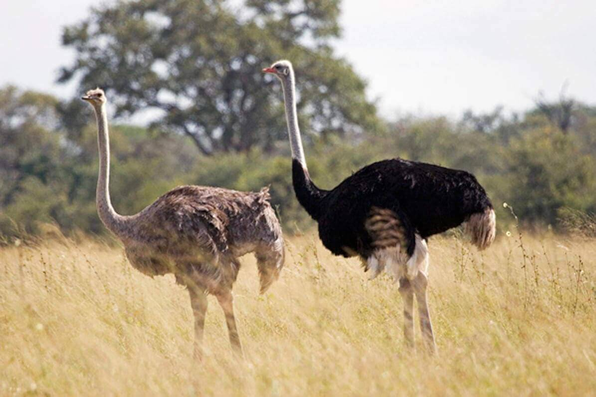
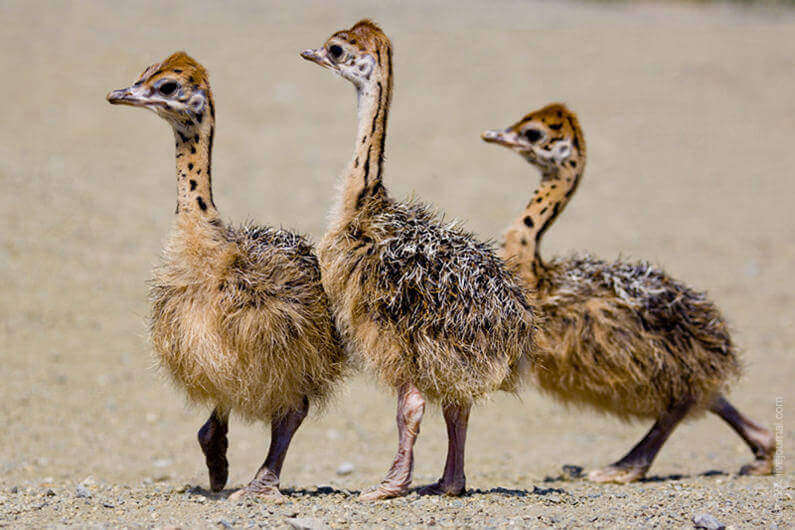

Природа одарила птицу страуса огромным ростом – до 2,5 метра у самцов, выдающимся для птиц весом, до 250 килограммов, и нешуточной силой: ударом ноги он может согнуть полутора сантиметровый железный прут. И как бегает! Лошадь не угонится. Много интересного о страусах рассказал kipmu.ru.
Его длинные мускулистые ноги заканчиваются двумя пальцами: это облегчает бег, и страус без особых усилий развивает скорость 50-70 километров в час, поддерживая ее довольно долго. Длина его шага – до 3,5 метра; чтобы притормозить или изменить направление, он расправляет крылья.

Высокий рост дает широкое поле обзора, позволяющее птице издалека различить потенциальную опасность. Такая стратегическая позиция в сочетании с сильно развитыми слухом и зрением делает страусов прирожденными стражами и пилигримами степей. Их огромные глаза, они крупнее, чем у всех других наземных позвоночных, хорошо приспособлены и к условиям пустыни.
Густые длинные ресницы, а также мигательная перепонка защищают их от вредоносных песчаных ветров. А широкое ушное отверстие, улавливающее самые слабые звуки, довершает совершенную систему безопасности. Жизненное пространство страусов простирается от сухих безлесных саванн до границ пустынь.

Но предпочитают они полупустынные зоны с достаточным количеством трав. День птицы страуса начинается незадолго до восхода, а заканчивается вскоре после захода солнца, при этом пик активности приходится на первые и последние часы светового дня. Птицы способны переносить сильную жару и даже в самые жаркие часы не ищут убежища в тени — температура тела у них поднимается до 42 С, и таким образом им не приходится тратить воду на потоотделение. Когда приходит ночь, страусы, как правило, возвращаются на одно и то же место. Члены группы располагаются таким образом, чтобы постоянно видеть или слышать друг друга.

Главная забота птицы страуса – найти пропитание, примерно 3,5 килограмма в день. Хотя страусы предпочитают зерна, фрукты и цветы, иногда они охотятся на насекомых, например на кузнечиков или саранчу, на ящериц и даже поедают маленьких птичек.
Страусы – стадные птицы. Размер и структура групп зависят от характера местности и времени года. Обычно, за исключением брачного периода, взрослые особи собираются в группы по 5-10 птиц, хотя встречаются и одинокие страусы. В пустынных зонах или во время длительной засухи можно увидеть скопления птицы страусов вокруг источника воды. Молодые часто образуют гораздо большие группы, насчитывающие до 100 особей. Структура таких объединений достаточно неформальна, каждый может присоединиться к ним или покинуть по собственной воле.

В саванне Восточной Африки самки страуса откладывают яйца преимущественно в августе. Когда начинается брачный сезон, самцы строят в самом центре своих владений гнездо, которое они будут охранять в течение пяти месяцев. В это время они регулярно издают глубокий рев, отдаленно похожий на львиный. Самцы кричат, чтобы привлечь внимание самок к месту гнездования и отогнать других самцов от брачной территории. Гнездо представляет собой ямку, примерно тридцать сантиметров глубиной и диаметром в метр.
Когда-то страусы были моногамны. Однако варварское истребление самцов «на перья» привело к тому, что оставалось слишком много одиноких самок. Чтобы выжить, страусы вынуждены были прибегнуть к полигамии: вокруг самца сосредотачиваются несколько подруг, одна из которых играет роль «главной жены». Именно она поочередно с самцом и высиживает яйца. Есть в семье и «второстепенные» самки, откладывающие свои яйца в чужое гнездо. Как правило, они не высиживают птенцов.

В брачный сезон оперение самцов становится особенно ярким. Ляжки и шея африканского страуса украшаются изумительными ярко-синими перьями. Во время брачных игр самцы поднимают хвост, попеременно распускают и складывают крылья. У «главной» самки обычно вдвое больше яиц, чем у ее подруг; каждая из них откладывает по яйцу раз в два дня.
Как правило, в страусином гнезде оказывается от 20 до 35 яиц – если становится больше, лишние выкидывают. Обычно яйцо – примерно 15 сантиметров в длину, его диаметр равен 12 сантиметрам, а вес достигает полутора килограммов. В дневное время кладку высиживает и охраняет «главная самка», а ночью – самец. Связано это с расцветкой птиц: серые самки менее заметны днем, черные самцы практически невидимы в ночное время.

Птенцы в кладке вылупляются почти одновременно. Разница между первым и последним составляет обычно не более трех дней. Иногда малышу приходится потратить немало часов на то, чтобы полностью освободиться от скорлупы. Помогает ее разбить плотный роговой нарост на клюве. Из-за своего колючего пуха, похожего на щетинки, вылупившийся страусенок скорее напоминает ежика, а не цыпленка. Впервые часы жизни страусята почти не могут поднимать голову.
В течение суток они не едят и обретают способность следовать за своими родителями только через 48 часов после того, как появились на свет. С этого момента птенцы уже могут убегать в случае опасности. Если они замечают преследование, то разбегаются в стороны, а затем внезапно бросаются на землю и застывают.
В это время родители пытаются отвлечь внимание врага. Самка бежит в одну сторону, самец в другую; оба они описывают большие зигзаги и волочат крылья, как будто они сломаны. Если хищник принимается преследовать одного из взрослых, второй перестает притворяться и старается увести птенцов. Чтобы защитить страусят от лучей солнца, мать собирает их под своими крыльями. Птенцы долго еще остаются лакомой добычей для хищников, смертность среди них довольно высока.
В два месяца у страусят выпадает щетинистый пух, и их оперение становится таким же, как у взрослых самок: разница в оперении между самцами и самками не видна до двух лет. До девяти месяцев птенцы ходят в своеобразные «ясли», где за ними наблюдает одна или несколько взрослых птиц. Полной зрелости молодняк достигает только к трем-четырем годам.
ВВЕРХ